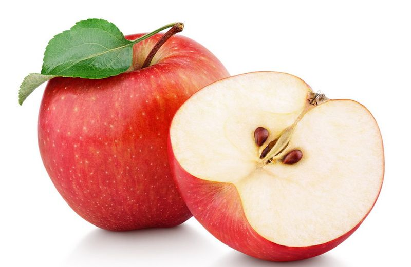

Tentang Buah
Apel
Apel adalah jenis buah-buahan, atau buah yang dihasilkan dari pohon buah apel. Buah apel biasanya berwarna merah kulitnya jika masak dan (siap dimakan), namun bisa juga kulitnya berwarna hijau atau kuning. Kulit buahnya agak lembek, daging buahnya keras. Buah ini memiliki beberapa biji di dalamnya. Orang mulai pertama kali menanam apel di Asia Tengah. Kini apel berkembang di banyak daerah di dunia yang suhu udaranya lebih dingin. Nama ilmiah pohon apel dalam bahasa Latin ialah Malus domestica. Apel budidaya adalah keturunan dari Malus sieversii asal Asia Tengah, dengan sebagian genom dari Malus sylvestris (apel hutan/apel liar). Kebanyakan apel bagus dimakan mentah-mentah (tak dimasak), dan juga digunakan banyak jenis makanan pesta. Apel dimasak sampai lembek untuk dibuat saus apel. Apel juga dibuat untuk menjadi minuman sari buah apel.
Khasiat Apel
- Meningkatkan daya memori
- Baik untuk usus
- Meningkatkan sistem kekebalan tubuh
- Baik untuk jantung
- Menurunkan tekanan darah
- Mengurangi risiko diabetes
Daftar Harga
| Jenis Apel | Harga | |
|---|---|---|
| Per Kilo | Per Biji | |
| Apel Manalagi | Rp.50.000 | Rp.5.000 |
| Apel Fuji | Rp.60.000 | Rp.6.000 |
| Apel Anna | Rp.70.000 | Rp.7.000 |
| Apel Merah | Rp.55.000 | Rp.5.500 |